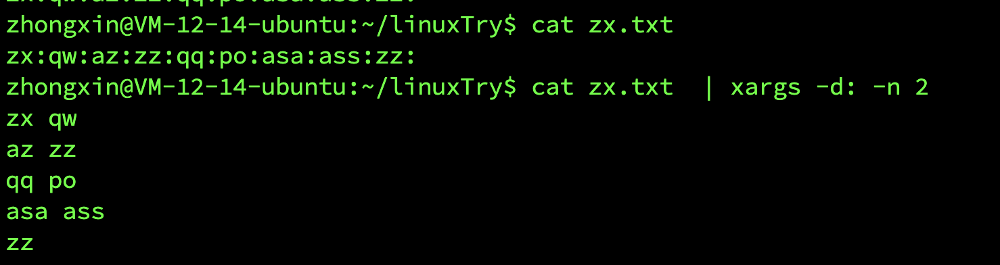
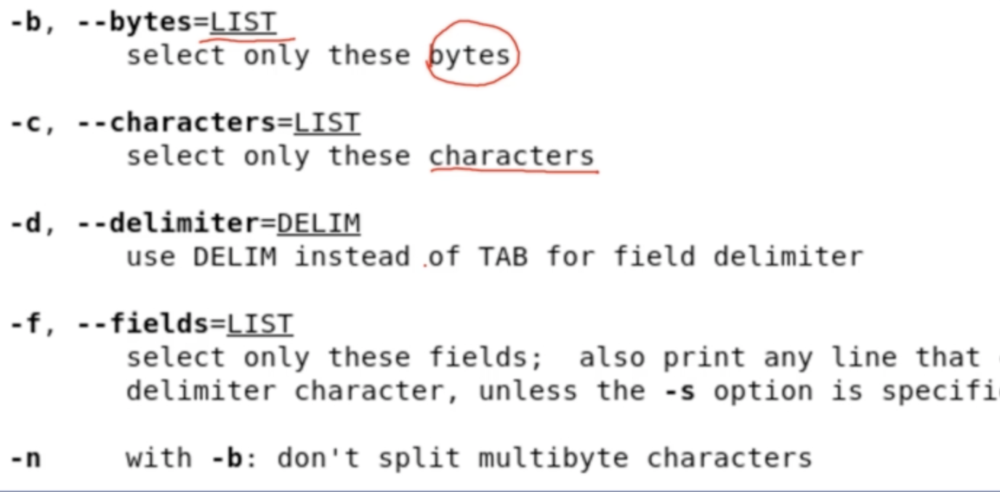

Linux基本指令2
管道
管道是一种通信机制，通常用于进程间的通信（也可通过 socket 进行网络通信），它表现出来的形式就是将前面每一个进程的输出(stdout)直接作为下一个进程的输入(stdin)。
管道又分为
- 匿名管道
- 具名管道
这里将不会讨论在源程序中使用系统调用创建并使用管道的情况，它与命令行的管道在内核中实际都是采用相同的机制
我们在使用一些过滤程序时经常会用到的就是匿名管道，在命令行中由|分隔符表示
具名管道简单的说就是有名字的管道，通常只会在源程序中用到具名管道。
grep指令
grep命令的一般形式为：
1 | grep [命令选项]... 用于匹配的表达式 [文件]... |
命令选项
-r参数表示递归搜索子目录中的文件-n表示打印匹配项行号-I表示忽略二进制文件-E主要是用来支持扩展正则表达式-Ev排除选项
根据一个模式进行输出
grep 表达式 目标文件
案例
1 | ls -l | grep "^-r.x" |
lsgrep两个命令grep没有文件参数｜管道 （将前面的输出作为后面的输入）
grep中的模式用正则表达式来表示
^表示行首$表示行尾.表示任一字符- 与通配符
?要区分
- 与通配符
- -,r,x 就是字符本身
正则表达式
匹配数字开头的行
^[0-9]
xargs命令
args 是一条 UNIX 和类 UNIX 操作系统的常用命令。它的作用是将参数列表转换成小块分段传递给其他命令，以避免参数列表过长的问题。
这个命令在有些时候十分有用，特别是当用来处理产生大量输出结果的命令如 find，locate 和 grep 的结果，详细用法请参看 man 文档。
xargs命令单独使用可以把接受的数据一行输出
xargs不能加文件名 使用重定向读取文件
xargs < file-n指定每行最大参数量 每行n个参数 默认分割符号为空格-d自定义分隔符(split())

cut命令
从文件中的每一行选择指定的部分打印到standard output上
常用选项

-b以字节分割1
2
3cut -b 5 file #选取每行第五个字节
cut -b 5-9 file #选取每行第5-9个字节
cut -b -5,10,14- file #选择每行 从开头到第5字节 第10字节 从第14字节到结尾的内容-c以字符分割1
2
3
4cut -b -5 file #选取每行开头的五个字节
cut -c -5 file #选取每行开头的五个字符
cur -nb -5 file #不对多字节字符进行分隔
# urf-8 每行汉子3个字节-d自定义分隔符-f选取的区域
打印/etc/passwd文件中以:为分隔符的第 1
个字段和第 6 个字段分别表示用户名和其家目录：
1 | $ cut /etc/passwd -d ':' -f 1,6 |
打印/etc/passwd文件中每一行的前 N 个字符：
1 | # 前五个（包含第五个） |
wc命令
统计每一行的xx数量
选项
-c按照字节统计-m按照字符统计-l按照行统计-L最大显示宽度-w按照词统计--help显示帮助--version输出版本信息
1 | # 行数 |
对于西文字符来说，一个字符就是一个字节，但对于中文字符一个汉字是大于 2 个字节的，具体数目是由字符编码决定的
sort命令
功能很简单就是将输入按照一定方式排序，然后再输出
它支持的排序有
- 字典排序(默认)
- 数字排序
-n - 月份排序
- 随机排序
- 反转排序
-r - 指定特定字段进行排序
- ......
对行进行排序
1 | sort filename #正排序后的文档 |
按特定字段排序：
1 | cat /etc/passwd | sort -t':' -k 3 |
上面的-t参数用于指定字段的分隔符，这里是以":"作为分隔符；
-k 字段号用于指定对哪一个字段进行排序。
这里/etc/passwd文件的第三个字段为数字，默认情况下是以字典序排序的，如果要按照数字排序就要加上-n参数：
1 | cat /etc/passwd | sort -t':' -k 3 -n |
uniq 去重命令
uniq命令可以用于过滤或者输出重复行。
过滤重复行
我们可以使用history命令查看最近执行过的命令
实际为读取${SHELL}_history 文件,如我们环境中的~/.zsh_history 文件
不过你可能只想查看使用了哪个命令而不需要知道具体干了什么，那么你可能就会要想去掉命令后面的参数然后去掉重复的命令：
1 | history | cut -c 8- | cut -d ' ' -f 1 | uniq |
因为
uniq命令只能去连续重复的行，不是全文去重所以要达到预期效果，我们先排序：
1 | $ history | cut -c 8- | cut -d ' ' -f 1 | sort | uniq |
输出重复行
1 | # 输出重复过的行（重复的只输出一个）及重复次数 |
cmp命令
将两个文件逐个字节进行对比
- 发现第一个不同的地方就结束并输出
- 适合比较两个文件是否完全相同
1 | cmp file1 file2 |
comm命令
对两个排序后的文件进行逐行比较
- 输出有三列
- 第一列：file1所独有的
- 第二列：file2所独有的
- 第三列：file1 和 file2 共有的
- 使用
-n显示第n列
diff命令
对两个文件进行逐行比较